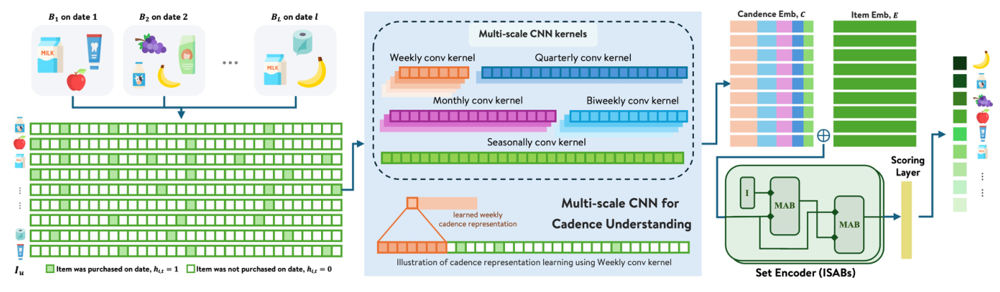
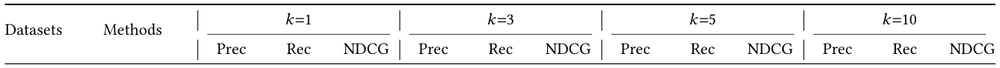
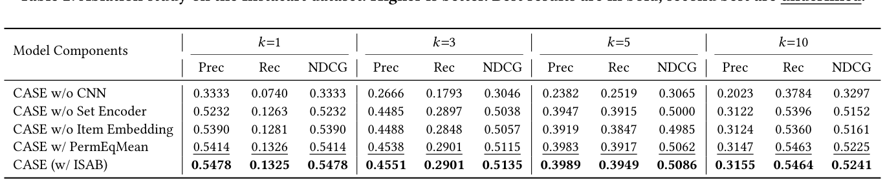
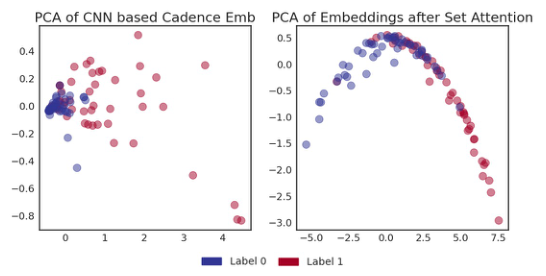
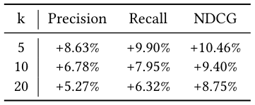

CASE: Cadence-Aware Set Encoding for Large-Scale Next Basket Repurchase Recommendation (面向大规模下一篮复购推荐的节奏感知集合编码)
- 会议/期刊: SIGIR 2026 (Industry Track)
- 推荐链路定位: 召回 (Retrieval) — 在用户历史复购候选集 \(\mathcal{I}_u\) 内做集合级打分排序
- 研究方向: 序列与会话推荐 / 生成式推荐（集合式时序预测）
- 论文原文: https://arxiv.org/abs/2604.06718v3
- 开源代码: 暂未开源
TL;DR (核心速览)
针对下一篮复购推荐 (NBRR) 中"篮子序号无法表达真实日历时间、两次购买之间打分静止"的结构性痛点，CASE 将每个物品的购买历史编码为 \(T\) 天二值日历信号，用共享多尺度时序卷积（周/双周/月/季/趋势五种核）提取物品级复购节奏，再用 ISAB 诱导集合注意力以 \(O(nK)\) 亚二次复杂度建模跨物品依赖，最终 MLP 输出复购分。在 4 个数据集（3 公开 + 1 工业）的留一法全候选排序协议下，Precision/Recall/NDCG@1/3/5/10 全面领先；生产环境 top-5 相对提升 Precision +8.63%、Recall +9.90%。
Background & Motivation (背景与动机)
- 领域背景与主流范式: 零售补货场景中，下一篮的相当比例物品是历史已购品，且复购间隔呈稳定的物品级节奏（牛奶按周、清洁用品按月）。主流 NBRR 方法（DNNTSP、BERT4NBR、TIFUKNN、PIETSP）将用户历史建模为按访问顺序索引的离散篮子事件序列，时间仅以篮子序号隐式表达。
- 现有方法局限:
- 时间语义失真：第 1/8/36 天的三篮与第 1/2/3 天的三篮在三步表示下完全相同，模型无法区分"已到期"与"尚未到期"，且两次交易之间打分完全静止，无法随天数推移刷新排序。
- KNN 类方法不可扩展：TIFUKNN 在推理时需对全量用户库计算用户相似度并聚合邻居历史，千万级用户规模下每次查询的 \(O(|\mathcal{U}|\cdot d)\) 检索不可行（实测 Instacart 测试集 3,744 用户：CASE 19s vs. TIFUKNN 318s）。
- 已有日历时间方案各有短板：文献 [3] 用卷积学习复购周期但采用用户专属卷积核参数化，无法规模化；PIETSP [7] 通过置换等变聚合实现可扩展集合建模，但未在物品级显式提取多尺度节奏。
- 核心挑战: 如何在显式建模日历时间节奏的同时，保持推理复杂度与用户总量无关、且不引入 per-user 参数？
- 核心洞察与切入点: 复购节奏是群体共享的（周/月/季等周期具有普适性），因此时序卷积核可在全体用户间共享；而用户候选物品天然是无序集合而非序列，应使用置换不变的集合编码而非自注意力序列建模。
Problem Formulation & Method (问题定义与方法架构)
1. 符号定义与输入表征 (Notations & Input Representations)
- 用户 \(u\) 的有序篮子序列 \(\mathcal{B}_u = (B_1, B_2, \dots, B_L)\)，其中 \(B_l \subseteq \mathcal{I}\) 于日历日期 \(d_l\) 购买。
- 复购候选集 \(\mathcal{I}_u = \bigcup_{l} B_l\)（仅限历史已购物品），任务为对 \(\mathcal{I}_u\) 排序以预测其出现在 \(B_{L+1}\) 中的可能性。
- 对每个 \(i \in \mathcal{I}_u\) 构造滚动 \(T\) 天二值购买指示向量 \(\mathbf{h}_i \in \{0,1\}^T\)，\(h_{i,t}=1\) 表示物品 \(i\) 在第 \(t\) 天被购买。
- 维度设定：物品嵌入 \(d_e = 128\)，CNN 输出 \(d_c = 128\)，ISAB 隐层 \(d_h = 256\)，诱导点数 \(K=32\)，注意力头数 \(H=4\)。
2. 整体流水线 (Overall Architecture)
数据流：日历时间二值信号 \(\mathbf{h}_i\) → 五尺度共享 Conv1d（stride = 核宽，非重叠窗口）→ 各尺度激活拼接 → 两层 FC+ReLU 得节奏嵌入 \(\mathbf{c}_i\) → 与物品嵌入拼接 \(\mathbf{x}_i = [\mathbf{c}_i \| \mathbf{e}_i]\) → 两层 ISAB → 集合编码 \(\mathbf{z}_i\) → 两层 MLP 输出标量分 \(s_i\) → 按 \(s_i\) 排序。
flowchart TD
A["输入层: 物品 i 的 T 天二值购买信号 h_i"] --> B["共享多尺度 Conv1d (w=7/14/28/91/182, stride=w)"]
B --> C["拼接各尺度激活 + 2 层 FC/ReLU → 节奏嵌入 c_i"]
D["物品嵌入 e_i"] --> E["拼接 x_i = [c_i || e_i]"]
C --> E
E --> F["2 层 ISAB (K=32 诱导点, H=4 头) → z_i"]
F --> G["2 层 MLP 打分 s_i → 集合内排序"]
3. 核心模块设计与数学原理 (Key Designs & Formulations)
(1) 日历时间历史表征与多尺度时序 CNN
对 \(\mathbf{h}_i \in \{0,1\}^T\) 施加五个预定义核宽的共享 Conv1d：周 \(w=7\)、双周 \(w=14\)、月 \(w=28\)、季 \(w=91\)、趋势 \(w=182\)，每个尺度 stride 等于核宽（非重叠窗口），产生 \(\lfloor T/w \rfloor\) 个激活。所有尺度激活拼接后经两层 FC + ReLU 投影为 \(\mathbf{c}_i \in \mathbb{R}^{d_c}\)。
物理直觉：小核捕捉细粒度周期性重复（每周补货），大核捕捉慢变趋势与季节性；卷积核在全体用户间共享，因此参数量与用户数无关，且节奏模式可从数据稀疏用户处借力群体统计。
(2) 诱导集合注意力 (ISAB)
候选物品构成无序集合，故采用 Set Transformer 的 ISAB：以 \(K\) 个可学习诱导点先对物品集合做注意力汇聚，再让物品回注诱导点，将全对注意力的 \(O(n^2)\) 降为 \(O(nK)\)。两层 ISAB（\(K=32\)，\(H=4\)）输出 \(\mathbf{z}_i \in \mathbb{R}^{d_h}\)，建模跨物品共购依赖（如买面包时牛奶的相关性）而不引入任意物品顺序假设。
(3) 打分与训练
\(\mathbf{z}_i\) 经两层 MLP 得标量 \(s_i\)；训练最小化二元交叉熵，正样本为 \(B_{l+1} \cap \mathcal{I}_u\)，负样本为 \(\mathcal{I}_u \setminus B_{l+1}\)。
4. 训练目标、负采样与推理复杂度 (Optimization, Negative Sampling & Complexity)
- 损失函数: 二元交叉熵 (BCE) $\(\mathcal{L} = -\frac{1}{|\mathcal{I}_u|}\sum_{i \in \mathcal{I}_u} \Big[ y_i \log \sigma(s_i) + (1-y_i)\log(1-\sigma(s_i)) \Big]\)$ 其中 \(y_i = \mathbb{1}[i \in B_{l+1}]\)。原文未报告额外的温度系数或辅助损失项。
- 训练负采样策略: 免负采样——在用户复购候选集 \(\mathcal{I}_u\) 内部做全集合 BCE，正负样本由真实下一篮自然划分，无 Uniform / In-batch / Hard Negative 采样。
- 时间与空间复杂度: 对含 \(n\) 个候选、\(T\) 天窗口的用户，多尺度时序编码 + ISAB 合计 \(O(n(T+K))\)，与用户总量 \(|\mathcal{U}|\) 无关；TIFUKNN 每查询需 \(O(|\mathcal{U}|\cdot d)\)。实测 Instacart 测试集（3,744 用户）推理耗时 19s vs. TIFUKNN 318s。训练配置：PyTorch，30 epochs，Adam（lr \(10^{-3}\)，weight decay \(10^{-5}\)），batch size 64，ISAB 后与 MLP 打分器均加 0.1 dropout。原文未报告峰值显存与单 epoch 训练耗时。
Experimental Setup & Evaluation Protocol (实验设置与评估协议)
- 数据集统计与预处理（四个杂货域数据集，覆盖不同目录规模与篮子密度）：
| 数据集 (Dataset) | 用户数 (#Users) | 物品数 (#Items) | 交互数 (#Interactions) | 稀疏度/密度 (Sparsity) | 模态/辅助特征说明 |
|---|---|---|---|---|---|
| Instacart | 18,739 | 37,522 | 原文未报告总交互数（人均 16.7 篮 × 10.07 件/篮） | - | 无日历时间戳，由订单间隔重建相对日期 |
| TaFeng | 7,227 | 18,703 | 原文未报告总交互数（人均 7.52 篮 × 6.58 件/篮） | - | 保留原始日历时间戳；历史短、篮子小，节奏建模困难 |
| DC (Dunnhumby Carbo-Loading) | 123,935 | 852 | 原文未报告总交互数（1.60 件/篮） | - | 无日历时间戳，由订单间隔重建；篮子极小 |
| Proprietary (Walmart 内部) | 10,308 | 88,812 | 原文未报告总交互数（人均 43 篮 × 11.72 件/篮） | - | 保留原始日历时间戳；历史最丰富 |
- 数据划分方式 (Splitting Strategy): 用户级 train–test 划分 + 留一法 (Leave-One-Out)，每个用户的最后一篮作为目标篮。原文未采用全局时间戳切分，但目标篮严格取时间上最后一篮，不存在未来信息泄露；候选集限定为用户历史已购物品，属"复购候选内排序"而非全库排序。
- 排名评测协议 (Ranking Protocol): 在用户复购候选集 \(\mathcal{I}_u\) 内做全候选排序（非负采样排序，也非全物品库排序），候选规模随用户历史增长。
- 评价指标与显著性检验: Precision@\(k\)、Recall@\(k\)、NDCG@\(k\)，\(k \in \{1,3,5,10\}\)；采用配对 \(t\) 检验（\(\alpha = 0.05\)，\(p<0.05\) 视为显著）。原文未报告多随机种子方差。
Key Experimental Results (核心实验结果)
1. 主实验对比 (Main Results)

| 数据集 | 指标 | 传统/协同过滤基线 (PersonalTop) | 序列/图/集合最强基线 | 本文方法 (Ours) | 相对提升 (Improv.) |
|---|---|---|---|---|---|
| TaFeng | Prec@1 / Rec@1 / NDCG@1 | 0.1771 / 0.0988 / 0.1771 | PIETSP 0.2507 / 0.1752 / 0.2507 | 0.2897 / 0.1877 / 0.2897 | +15.6% / +7.1% / +15.6% (vs. PIETSP) |
| TaFeng | Prec@10 / Rec@10 / NDCG@10 | 0.0795 / 0.3839 / 0.2612 | PIETSP 0.1094 / 0.5853 / 0.3801 | 0.1157 / 0.5953 / 0.4021 | +5.8% / +1.7% / +5.8% |
| DC | Prec@1 / Rec@1 / NDCG@1 | 0.3434 / 0.2879 / 0.3434 | PIETSP 0.3886 / 0.3291 / 0.3886 | 0.3904 / 0.3296 / 0.3904 | +0.5% / +0.2% / +0.5% |
| DC | Prec@10 / Rec@10 / NDCG@10 | 0.1059 / 0.7838 / 0.5000 | PIETSP 0.1092 / 0.8443 / 0.5467 | 0.1143 / 0.8468 / 0.5487 | +4.7% / +0.3% / +0.4% |
| Instacart | Prec@1 / Rec@1 / NDCG@1 | 0.5019 / 0.1173 / 0.5019 | TIFUKNN 0.5489 / 0.1340 / 0.5489 | 0.5478 / 0.1325 / 0.5478 | −0.2% / −1.1% / −0.2%（略低于 TIFUKNN） |
| Instacart | Prec@10 / Rec@10 / NDCG@10 | 0.2819 / 0.4821 / 0.4671 | TIFUKNN 0.3115 / 0.5371 / 0.5189 | 0.3155 / 0.5464 / 0.5241 | +1.3% / +1.7% / +1.0% |
| Proprietary | Prec@1 / Rec@1 / NDCG@1 | 0.3672 / 0.0921 / 0.3672 | TIFUKNN 0.3856 / 0.0971 / 0.3856 | 0.3871 / 0.1007 / 0.3871 | +0.4% / +3.7% / +0.4% |
| Proprietary | Prec@10 / Rec@10 / NDCG@10 | 0.1766 / 0.2962 / 0.3121 | TIFUKNN 0.2038 / 0.3547 / 0.3543 | 0.2017 / 0.3448 / 0.3514 | −1.0% / −2.8% / −0.8%（@10 略低于 TIFUKNN） |
关键观察：CASE 在稀疏场景（TaFeng 短历史、DC 小篮子）优势最大，说明日历节奏信号在交易频次低、篮子上下文有限时比邻居聚合更可靠；在丰富数据集（Instacart、Proprietary）上与 TIFUKNN 互有胜负但整体接近或略优。DNNTSP 与 BERT4NBR 在 DC/Instacart/Proprietary 上甚至低于 PersonalTop，佐证篮子序号表示的结构性缺陷——更复杂的图/Transformer 架构无法弥补缺失的日历时间建模。
2. 消融实验与控制变量分析 (Ablation Study)

Instacart 上消融（\(k=10\) 为例）：
| 变体 | Prec@10 | Rec@10 | NDCG@10 | 结论 |
|---|---|---|---|---|
| CASE w/o CNN | 0.2023 | 0.3784 | 0.3297 | 降幅最大（相对完整模型 NDCG −37%），节奏建模是主导贡献 |
| CASE w/o Set Encoder | 0.3122 | 0.5396 | 0.5152 | 各 cutoff 一致下降，跨物品依赖有互补价值 |
| CASE w/o Item Embedding | 0.3124 | 0.5360 | 0.5161 | 仅温和下降，说明日历编码是主要驱动，可降低对大嵌入表的依赖 |
| CASE w/ PermEqMean | 0.3147 | 0.5463 | 0.5225 | 置换等变均值池化已具竞争力，ISAB 进一步带来一致增益 |
| CASE (w/ ISAB) | 0.3155 | 0.5464 | 0.5241 | 完整模型 |

图 2 的 PCA 可视化进一步佐证：时序 CNN 已按节奏相位将正负样本分离，ISAB 在此基础上通过跨物品交互锐化决策边界。消融对照未显式做参数量对齐，但 PermEqMean 与 ISAB 的对比属于同输入表征下的编码器替换，控制相对干净。
3. 稀疏度/冷启动分桶与超参敏感度 (Sparsity Buckets & Hyperparameters)
- 稀疏场景表现: 原文未做严格的用户/物品交互频次分桶，但通过数据集层面的稀疏性对比给出结论——TaFeng（7.52 篮/人、6.58 件/篮）与 DC（1.60 件/篮）上 CASE 领先幅度最大，作者归因于共享时序编码在低交易频次下仍能跨用户泛化，而邻居聚合变得不可靠。
- 关键超参数敏感度: 原文未报告核宽组合、\(T\) 窗口长度、\(K\) 诱导点数、\(d_c/d_h\) 维度的敏感度分析；作者在结论中明确将"固定多尺度核与固定时间窗口"列为局限，并建议未来探索自适应时间参数化。
- 线上 A/B 测试结果: 原文仅报告生产模型对比（离线/回放式评估），非在线 A/B。

表3：CASE 相对于生产模型的相对提升（%）。
Highlights, Limitations & Critiques (亮点、局限与审稿级批判)
- 核心亮点与可迁移性:
- "日历时间二值信号 + 共享多尺度卷积" 是一种极轻量、与用户数解耦的节奏表征，可直接迁移到补货电商、订阅续费、内容周期性消费（如周更剧集）等任何具有物品级周期性的推荐场景。
- ISAB 替代全自注意力 将集合建模从 \(O(n^2)\) 降至 \(O(nK)\)，配合"候选集为无序集合"的任务先验，是工业级集合排序的实用范式。
- 消融显示去掉物品嵌入仅温和下降，意味着可显著缩减需高频刷新的嵌入表规模，对目录快速增长的工业系统有直接工程价值。
- 局限性与审稿视角批判:
- 评估协议偏窄：候选集限定为用户历史已购物品，属"复购候选内排序"，未与"全物品库召回"或"新物品发现"任务对比；对 NBRR 中非复购的新品推荐完全未覆盖。
- 基线强度与调参公平性存疑：DNNTSP、BERT4NBR 在多个数据集上低于 PersonalTop 这一简单频率基线，虽作者归因于篮子序号表示的结构性缺陷，但也可能反映基线调参不足（仅统一 30 epochs、同一优化器），削弱了对比说服力。
- 超参敏感度缺失：五种固定核宽 \(\{7,14,28,91,182\}\) 与固定 \(T\) 窗口缺乏消融与敏感度分析，作者自认这是局限；对复购周期极长（如 >182 天）的物品，趋势核可能失效。
- 非平稳节奏未处理：模型假设历史节奏相对稳定，对渠道外购买、生活习惯突变等非平稳信号的处理能力未经检验。
- 生产评估非在线 A/B：+8.63%/+9.90% 的提升来自与生产 LTR 模型的离线对比，作者明确在线 A/B 尚在计划中，业务收益尚未闭环验证。
- 统计严谨性一般：虽报告配对 \(t\) 检验，但未报告多随机种子方差；Instacart 与 Proprietary 上部分 cutoff 实际略低于 TIFUKNN，摘要中"consistently improves"的措辞略有夸大。
Rating (四维评分)
- 方法创新性 (Novelty): ⭐⭐⭐（日历时间表征与 ISAB 均为已有组件的合理组合，创新在于"物品级节奏与跨物品交互解耦"的架构取舍与工业可扩展性论证）
- 评估协议与实验扎实度 (Protocol & Experiments): ⭐⭐⭐（四数据集 + 留一法 + 配对 \(t\) 检验较规范，但候选集受限、基线调参公平性存疑、缺超参敏感度与多 seed 方差）
- 写作与数学规范度 (Clarity & Rigor): ⭐⭐⭐⭐（问题动机清晰、复杂度分析到位、消融与可视化互相印证，公式与维度交代完整）
- 工业落地与复现价值 (Industrial & Practical Value): ⭐⭐⭐⭐⭐（千万级用户生产验证、推理 19s vs. 318s、参数量与用户数解耦、降低嵌入表依赖，工业价值突出；但代码未开源，复现需自行实现）